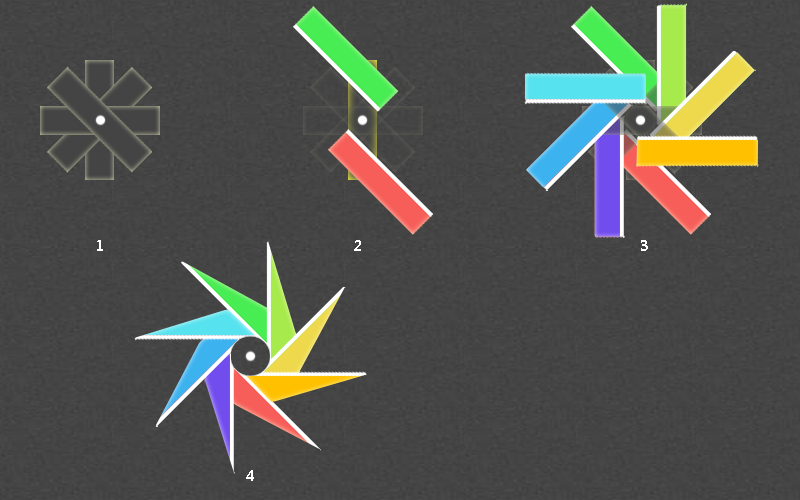

这个动画改编自光盘旋转，前几个步骤一样，最后一步不同。光盘旋转的最后一步是外层容器加个圆形的白色边框，多余部分隐藏，这个案例则是在每个旋转的子元素的顶部或底部增加一个三角形的元素，构成风车旋转的角。

2.1 首先还是定义四个元素，元素的中心为这四个元素组成的圆的圆心。这样定义的目的可以保证元素拼凑成一个正圆。
2.2 在单个元素的头尾各定义一个子元素，子元素旋转一定的角度，使其平行排列，中间刚好留一个正圆的位置。这里用了rotate和translate属性，没有用skew属性，是因为skew方法会使元素拉伸后变小。
2.3 将每个元素的子元素都定义不同的背景色，定义完成后，会形成8个不同的颜色排列，此时元素的形状已经产生了。需要注意的是，最后一个元素需要裁剪下，因为有可能会覆盖第一个元素。案例中第4，8个子元素是分开写的。
2.4 此时在圆心位置定义一个圆，圆的大小刚好覆盖中间的空隙位置。在1,2,3,4个子元素的顶部绝对定位一个元素，设置这个元素的边框，产生三角形的形状，形成风车旋转的角。同样的，在5,6,7,8个子元素的底部设置同样一个三角形的形状。
2.5 定义动画，并在外层容器上应用这个动画。这个动画的方式比较简单，就是旋转，直接使用rotate即可。